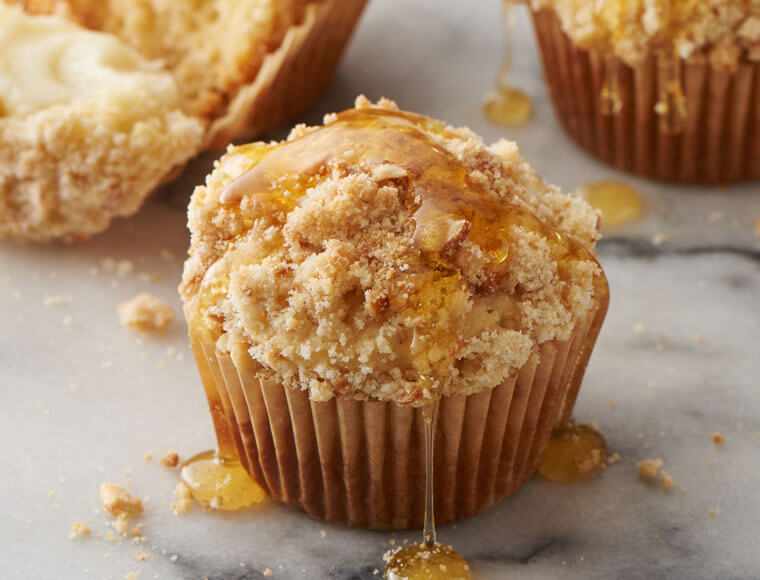

The Starving Artist Cookbook
Honey Muffins
Total Time
30 min
Makes
1 dozen
Author
Grammy Liz

INGREDIENTS
- 2 cups all-purpose flour
- 1/2 cup sugar
- 3 teaspoons baking powder
- 1/2 teaspoon salt
- 1 large egg, room temperature
- 1 cup 2% milk
- 1/4 cup butter, melted
- 1/4 cup honey
DIRECTIONS
-
Preheat oven to 400°. In a large bowl,
combine flour, sugar, baking powder
and salt. In a small bowl, combine egg,
milk, butter and honey. Stir into dry
ingredients just until moistened.
-
Fill greased or paper-lined muffin cups
three-fourths full. Bake until a
toothpick inserted in center comes out
clean, 15-18 minutes. Cool 5 minutes
before removing from pan to a wire rack.
Serve warm.